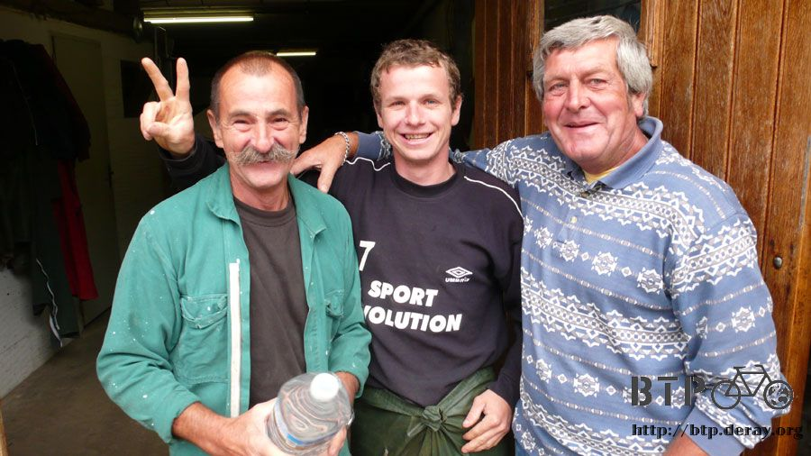
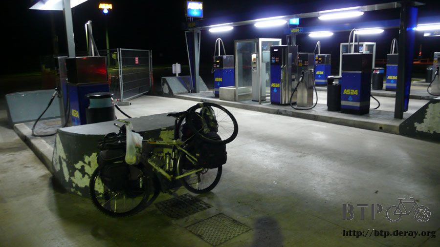

明天‧巴黎
室內的溫度果然比較宜人一些，早上起床還有個十度，看著不禁覺得很安慰，比起個位數的溫度，這樣真是溫暖呀。
睡在這邊感覺就是會有人一早來上班，所以設定鬧鐘六點就叫我起床，趁著一大早不引人注意的離開，可是鬧鐘被凍傻了，連吭都不吭一聲。
於是乎我就安穩的睡到早上七點，醒來之後很慌忙的整理這些露營裝備，深怕被人發現。
好加在離開的時候平平安安的，外頭的天氣也還過得去，雲層一樣的低沉，冰凍的手指需要運動才能恢復知覺。
出發之後別忘了昨天是為什麼才騎到這邊來，那些無情的汽車專用道可不會因為我睡了一覺就自動撤離，睡醒之後繼續跟這些路標傷腦筋吧。
我要走的馬路豎立著汽車專用道的牌子，當然可以選擇硬上，後果就是隨時會被警察攔下來、一直被按喇叭、更糟的就是出車禍。
替代的選擇就是右邊的田間小路，路況不好，可是就是沒別的選擇，沒有其他道路、也沒有自行車專用道。
一開始田間小路還是跟大馬路平行而走，所以只是路況差了一點，至少前進的方向是一致的。
比較鳥的就是，大馬路明明就是直直的往前開，為什麼走小路就要爬山？
法國的駕駛人不像哈薩克會全天候開大燈，只有在清晨跟黃昏之後才會開，看著一整排的車燈，有一種時候還很早的感覺。
今天沒有日出可以欣賞，雲層還是那樣的濃厚，昨天犀利的逆風今天收斂很多，風向跟我依然作對，但風勢已經減弱。
山間小路騎一小段之後要跨天橋到對面去，從上往下看，這些路段禁止自行車通行的原因很簡單，不是因為車速太快或是車流太多。
簡單的說就是根本沒有自行車可以騎乘的空間，連個像樣的路肩都沒有，雙線道就將整個馬路給佔滿。

自行車若是騎在上面的話，就會造成車輛必須不斷的變換車道繞行閃避，也就容易發生後方追撞的危險。
所以說，法國的道路規劃得真是很爛，對於騎自行車旅行的人而言簡直是個噩夢，之前我已經領教過，現在又再度上演。
騎著田間的小路，居然還有一點點鋪過柏油的痕跡，走在這裡完全看不見道路的指示牌，這條路也沒有名字，會通往哪邊完全不得而知。
就算騎到盡頭只是一片玉米田，我也不會太訝異，畢竟這本來就不是正規的道路，所以隨時都做好走回頭路的心理準備。
做最壞的打算，但結果還是值得期待，從小路穿越田地越過森林，前面又看見了房舍的蹤影，這就表示我又可以回到正常的路上騎車了。
值得紀念的一刻，首度在法國看見指示著巴黎的牌子，可惜沒有寫距離，粗略估計大約還有三百公里出頭。
明天應該是可以騎到，只是要在中午就抵達的話會很有難度，依照這幾天騎乘的情況來看，抵達時間大概會拖到太陽下山。
趕路之餘欣賞一下小城鎮的景色，看著這些鴨子，心裡不禁湧起些許同情的感覺，河水一定很冰冷吧？
還好剛才那條大馬路有經過這個城鎮，所以不算陷入太糟糕的迷路狀態，沿路這麼走田間小路，說不定就是通往巴黎的康莊大道。
出城之後依然是汽車專用道，馬上轉旁邊的小路跟著平行而走，騎在一輛車都沒有的小路上有些寂寞。
耳朵聽著旁邊呼嘯而過的汽車聲才能確定自己是跟著大馬路在騎，很怕騎著騎著又要把自己給弄丟。

繞過茂密的樹林之後就可以看見底下的大馬路，我好想正大光明的騎在上面，最便捷、最短距離的路線，卻是禁止走的路。
沿著大馬路騎沒多久，一條向左拐、一條向右彎，然後我就被帶往一條不知名的路上，又被群山給包圍。
只要在岔路口，一定會有告示牌，標示地名跟通往的方向，這一點法國倒是做得很好，只是這些路跟地名在地圖上都找不到。
一遇到分岔路口，我就會停車、拿出地圖，找著不存在於地圖上的地名跟道路，然後很不確定的選擇一個方向繼續騎。
騎上路的時候，心裡想的都是：『會不會選錯啦，感覺剛才那一條才是對的耶，要往回騎嗎。』
就這麼不安的一直騎下去。
迷路到心力交瘁的時候，會很想問人，路上偶爾會有車輛經過，可是沒有人有停下來的意思。
今天已經是星期一了，經過城鎮的時候，大多數的人家都還是緊閉大門，好不容易看到一個農莊有人在聊天，馬上抓著地圖去問路。

語言不通也不管，指著地圖說我要去巴黎，該怎麼走？
對方在地圖上也找不到目前我所在的位置，只能大概的知道在某個區域附近，好心的大叔接過我的筆記本，
從我目前所在的城鎮開始，寫下沿路我會經過的城鎮名稱，一個接著一個的寫，接下來我只要跟著騎就可以了。
這麼一路寫竟然足以讓我騎上五十公里的路，進入大城市之後就要靠我自己再想辦法往下找路了。
收回筆記本，看著像是英文字母的字，等等拿這些去跟路上的指示牌比照應該沒問題吧？
現在感覺有信心多了，要走之前問了一下能不能讓我裝個水。
結果當然是沒問題，直接送一大瓶兩公升的礦泉水給我，沿路這麼喝可以撐到下一個補給水源的地方。

多謝你們的好心相助，讓我得以在接下來好幾個分叉路口快速的作出正確的選擇。

我一直很想騎的路是N4，如果它能騎的話，只要待在上面就可以一路騎進巴黎去，但問題就是它不能騎。
走小路的話就要先往北走，再往西走，拐了一個直角就多繞了三十公里的路。
牆壁上的海報第二彈，跟上次那個系出同門，這次是回收寶特瓶，文字的意思是，大回收五千個寶特瓶可以節省一桶石油。

昨天買的吐司已經吃完了，口袋裡的現金只有不到一歐元，進入這個城市之後，找了一間超級市場採買補給。
買了綜合果汁、鹹鹹的蝦餅、笑臉餅乾跟一條吐司。

都說沒錢了還買這麼多，要用什麼付帳？
答案是刷卡，但是不確定能不能刷，所以沒敢拿太多東西，而且還是拿了已經吃得有點膩的吐司。
萬一不能刷卡的話，其他東西都能退，身上的現金也買得起這條吐司。
這些東西總計四點八歐元，當我拿出信用卡的時候 ，店員沒有一絲為難的樣子，並不會因為金額太低而不讓我刷卡。
終於買到了新的食物，打開果汁咕嚕咕嚕的就喝掉大半瓶，拆了笑臉餅乾大把大把的吃，吐司就留到肚子餓到不行的時候再拿出來啃吧。
法國還有一個特色，只要是地圖上能找到的路，就算再怎麼樣的小條，鋪設得都很好。
像這一條路的水準已經打敗了哈薩克境內所有的道路，可是它只是一條D開頭的路罷了。
即使知道自己正在繞路騎車，但是路況如此良好，還是能夠減輕一點疲憊感，與其埋怨不如加快前進的步伐。
感覺好像進入歐洲，或者是說進入法國之後，所有人都覺得這趟旅行已經結束了，但剩下這幾百公里還是需要一步一步的踩完它，並不會自動騎完。
說那麼多也沒用，選擇騎車的人是我，捨棄所有喜怒哀樂七情六慾，最單純的就只剩下兩個字，前進。
走完大叔寫的五十公里鄉鎮，果真又回到了N4的路段，我真是超感謝這位大叔的！
若不是因為他，那麼自己胡亂摸索的情況下，能不能重新騎到這裡都是個未知數，就算真的給我騎回來了，那也不知道是幾個小時之後的事情。
另外一件值得慶賀的事情，一樣的N4，從這邊開始可以讓自行車上去，接下來就是最有效率的騎乘路段了。
汽車專用道跟可以讓自行車走的路，差異幾乎是零，可以說只差在路口有沒有放一個藍色牌子而已。

接下來的N4，大卡車一樣呼嘯而過，本來擁擠的路面多出了一點點的路肩能讓我棲身，以貼近最邊緣的方式騎車，避開兇狠的大卡車。
在限速一百一十公里的路上，跟這些大卡車交會而過是一件很恐怖的事情，光是風壓就足以將我吹得左右搖晃。
騎在N4上，許久不見的道路指示牌又回來了，早上看見巴黎的牌子，但是距離不明，下午三點的時候距離為一百六十七公里。

的確可以在明天抵達，如果進入巴黎不要迷路太慘的話，天黑前應該可以騎到鐵塔。
但若希望在中午就到，那不是用一般趕路的方式就能處理，今天夜晚可能要在漆黑的路上一點一點的往巴黎前進才行。
看著明確的指示牌，覺得巴黎已經不遠了，地圖上說這條N4只有這麼一段路是可以讓自行車騎，接下來又要繞路而走。

沒關係，把握這個機會，能有效率的多騎一公里，也比繞路繞半天在原地打轉的有意義。
趕著在這一段N4一口氣縮短跟巴黎的距離，結果居然爆胎，有沒有搞錯呀？
在大卡車呼嘯而過的路上給我爆胎，而且昨天早上才換過一條新的內胎耶。
在波蘭的時候從小鵝那邊補給了三條新的內胎，本來只覺得是帶心安的，壓根沒想到才這點路程就陣亡了兩條。
盡可能靠著路邊停好小多，自己也坐在草地上，吹著大卡車經過時所颳起的大風，快速的將新的內胎給換上。
這次不用找半天研究是為什麼爆胎，只要不是瞎子都可以看見這根刺穿輪胎的大鐵絲。

這麼粗的鐵絲刺破全新的外胎，看得我很心疼，還好框架沒有因此而受損。
花十分鐘處理好這個意外的插曲，在太陽下山之前不知道今天可以騎多遠？
日落的方向，正西邊，終點的所在之處，明天就可以抵達了，這趟從北京出發的旅程，只需要再一天就可以劃上句點。
明天‧巴黎
今天晚上沒有睡覺的打算，會找一個地方小窩一下，然後夜騎上路，在天亮之前多少騎一點，中午之前抵達並非不可能。
沿著N4道路可以發現很多休息站，我想是因為高速公路不給大卡車上的緣故，所以大卡車通通跑到N開頭的路上狂奔。
而這些休息站就專做卡車司機的生意，二十四小時經營是最基本的，裡面的腹地超廣大，可以停好幾十台大卡車的停車場。
發現這一間的時候，本來計畫是在裡面充電存一下照片，最好可以吃點東西，稍作休息之後上路夜騎。
但是門口沒有貼信用卡的標誌，所以沒有辦法在裡面消費。
之前太陽下山的時候，大概都會維持一小時的亮度，現在只要太陽一落下地平線，十五分鐘左右就會變得漆黑一片。
點亮車尾警示燈，開啟車頭的鹵素燈泡，繼續沿著路肩慢慢的騎，一樣的路況，只是白天跟晚上的差異，感覺就危險許多。
後面經過的車輛，會先用遠燈照一下，看看那個在前面閃著紅燈的是什麼東西？
發現是自行車之後，多半都會繞道閃過我。
我不擔心被撞到，擔心的是黑漆漆的夜裡自己會不會騎到摔車，路面的情況變得晦暗不明，只有短短一秒鐘的時間可以分辨。
晚上快十點的時候進到這一個無人的二十四小時加油站，感覺自己就像昆蟲一樣，被燈火吸引而來。

因為是無人加油站，所以當然就沒有任何員工，這邊就是今天的休息處所了。
很幸運的在這裡發現插頭，毫不客氣的就用了起來，屁股枕著睡墊，背靠著加油的機器，打算趁休息的幾個小時，一口氣寫完這三天的遊記。
坐在加油站吹風打電腦，衣服什麼的都沒換，只脫掉了手套，換上了拖鞋，四周已經是漆黑一片，加油站照明以外的地方什麼也看不見。
這邊畢竟是加油站，就算沒有員工，也是會有顧客的，我坐著的地方是一條加油的通道，不時會有大卡車開過來加油。
這個大叔是跑長途貨運的，他剛從莫斯科開車過來，要開到巴黎去。
我指著小多，說自己也是從莫斯科騎過來的，也要去巴黎。
這一講就讓他有種很被驚嚇的感覺，其實從莫斯科騎到這邊算是小意思，不過旅程的三分之一不到而已。
大叔一邊加油一邊跟我聊天，他講的是法文，我就假裝自己聽的懂，眼睛跟手指則沒離開過電腦。
加完油的大叔並沒有馬上離去的意思，陸續也很有多卡車是直接開進加油站就停車睡起覺來，我看他也是一臉倦容的樣子。
不知道公司規定從莫斯科開到巴黎要幾天？
他坐在車子上看著包覆睡袋打電腦的我，感覺越看越有趣。
對～是睡袋，入夜後實在太冷了，我又拿出了睡袋將自己給包起來。
接著聽到卡車上傳來喀啦喀拉的聲音，然後飄出了咖啡的香味，非常不可思議的，大卡車裡居然內建咖啡機，想喝咖啡提神隨時都可以自己泡。
大叔泡了兩杯咖啡，一杯他自己喝，另外一杯則遞給了我。
寒風中可以握著暖呼呼的熱咖啡感覺很舒服，看著大叔加油的時候，我本來想問他可不可以分一點油給我，這樣子汽化爐就有燃料了。
但是想一想，明天就到巴黎了，現在補充燃料有什麼意義？
而且如果大叔真的分汽油給我，百分之百我會在加油站就直接升起火來，明天又很有可能會上當地的報紙。
喝著大叔的熱咖啡，喝完還可以續杯，送走大叔之後繼續打字寫遊記。

這就是我目前的樣子，包括打這一句話的時候。
之前寫遊記都是回顧今天發生的事情，難得這次是記錄正在進行的事。
依然寒冷的夜裡，氣溫又只剩下七度，有睡袋的包覆真是暖和不少，在加油站一口氣寫了三天份的遊記，實在有點累人。
從晚上十點寫到凌晨四點，足足寫了六個小時，眼睛沒闔過，剛才的熱咖啡除了很暖身子之外也有提神的效果。
寫完這些遊記，收拾完睡袋，準備出發，從凌晨四點到中午十二點，我有八個小時可以騎車。
能不能在中午抵達巴黎，我也不知道，可能你在看這篇遊記的時候，我已經在鐵塔下累得不支睡去，也有可能是淚得不成人樣。
比較有可能是還在路上迷路，但無論如何，總有一天，不論多晚，我都會騎到終點。
走吧～該是去劃句點的時候了。
繼續閱讀：9.12 這裡沒有英雄
歐洲-歐元－ 1：45 台幣
9.11 |
總計：4.8元 |
超級市場吐司、笑臉餅乾、鹹餅乾、綜合果汁4.8元 |
|